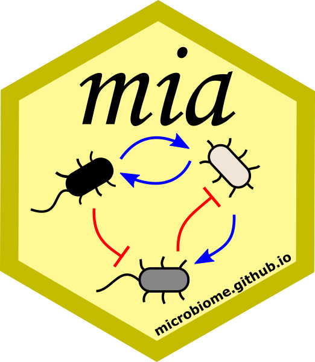

1 Packages


The Bioconductor microbiome data science framework consists of:
- data containers, designed to organize multi-assay microbiome data
- R/Bioconductor packages that provide dedicated methods
- community of users and developers
This section provides an overview of the package ecosystem. ?sec-example-data links to various open microbiome data resources that support this framework.
1.1 Package installation
You can install all packages that are required to run every example in this book via the following command:
remotes::install_github('microbiome/OMA')1.1.1 Installing specific packages
You can install R packages of your choice with the following command line procedure.
Bioconductor development version requires the installation of the latest R beta version. This is primarily recommended for those who already have experience with R/Bioconductor and need access to the latest updates.
BiocManager::install("microbiome/mia", version="devel")Github development version provides access to the latest but potentially unstable features. This is useful when you want access to all available tools.
devtools::install_github("microbiome/mia")If you encounter installation issue related to package dependencies please see the troubleshoot page here.
2 ## Package ecosystem
2.1 Package ecosystem
Methods for (Tree)SummarizedExperiment and MultiAssayExperiment data containers are provided by multiple independent developers through R/Bioconductor packages. Some of these are listed below (tips on new packages are welcome).
2.1.1 mia package family
The mia package family provides general methods for microbiome data wrangling, analysis and visualization.
- mia: Microbiome analysis tools (Ernst, Shetty, and Lahti 2020)
- miaViz: Microbiome analysis specific visualization (Ernst, Borman, and Lahti 2022)
- miaSim: Microbiome data simulations (Simsek et al. 2021)
- miaTime: Microbiome time series analysis (Lahti 2021)
2.1.2 Differential abundance
The following DA methods support (Tree)SummarizedExperiment.
- ANCOMBC for differential abundance analysis
- benchdamic for benchmarking differential abundance methods
- ALDEx2 for differential abundance analysis
2.1.3 Other packages
- philr (Silverman et al. (2017)) phylogeny-aware phILR transformation
- MicrobiotaProcess for “tidy” analysis of microbiome and other ecological data
-
Tools for Microbiome Analysis site listed over 130 R packages for microbiome data science in
- Many of these are not in Bioconductor, or do not directly support the data containers used in this book but can be often used with minor modifications. The phyloseq-based tools can be used by converting the TreeSE data into phyloseq with
makePhyloseqFromTreeSummarizedExperiment.
- Many of these are not in Bioconductor, or do not directly support the data containers used in this book but can be often used with minor modifications. The phyloseq-based tools can be used by converting the TreeSE data into phyloseq with
2.1.4 Open microbiome data
Hundreds of published microbiome data sets are readily available in these data containers (see ?sec-example-data).